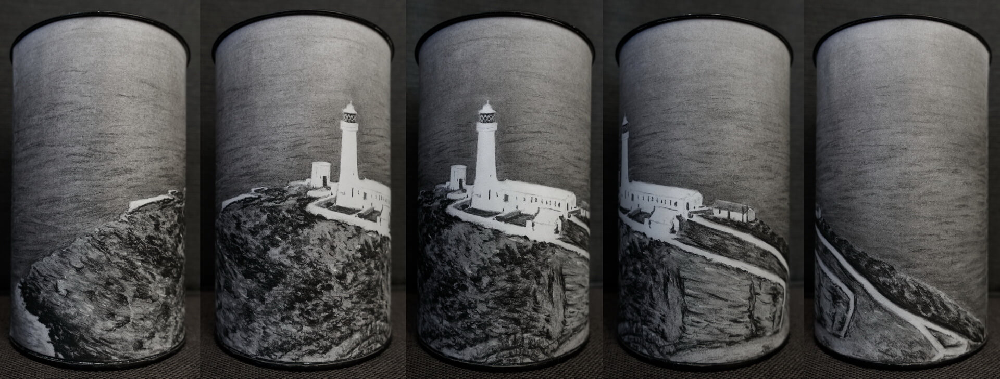

Erzsebet Kis-Nagy
Home
About
Drawings
Paintings
Contact
Dyffryn House
exhibited at Wales Contemporary

South Stack Lighthouse
exhibited at Wales Contemporary
Menai Bridge
exhibited at Wales Contemporary
There's No End To It
exhibited at Derwent Art Prize